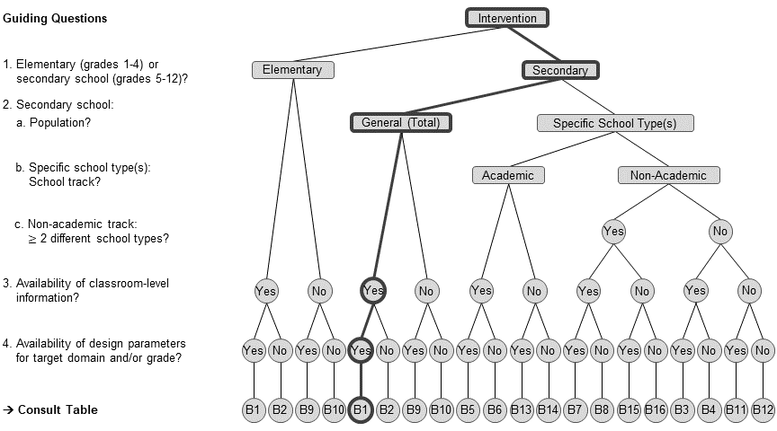
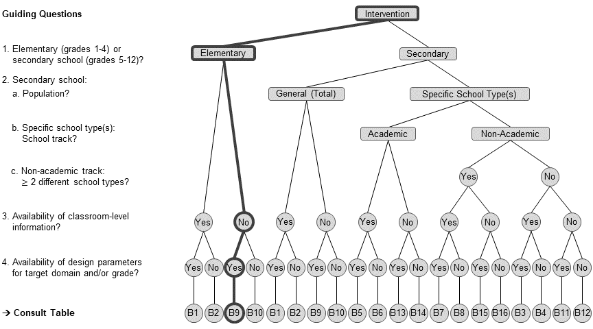
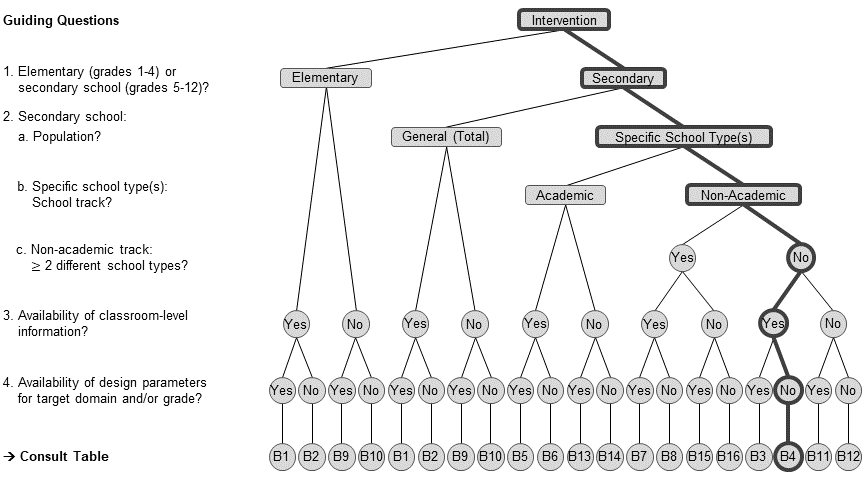
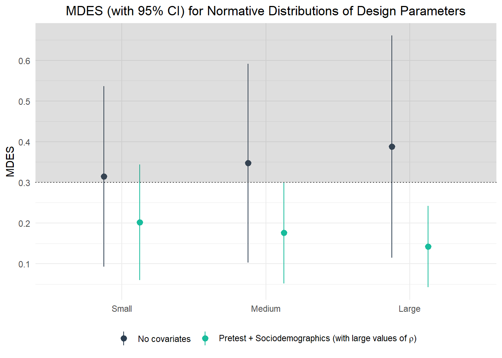

Multilevel Designs
Cluster Randomized Trials (CRTs)
In a cluster randomized trial (CRT), entire groups of students (e.g., whole schools) are randomly assigned to the experimental groups; likewise, the treatment and control protocols are delivered at the cluster level.
In this tutorial, you will learn how to perform power analysis for 2L- and 3L-CRT designs. In the 2L-CRT, students at L1 are nested within schools at L2 and entire schools are randomly assigned to the experimental conditions. In the 3L-CRT, students at L1 are nested within classrooms at L2 which are, in turn, nested within schools at L3. Here, randomization/treatment assignment occurs, again, at the top hierarchical school level.
Illustration of the Worked Example
In the following we will walk through the process of planning a 3L-CRT, as the more general case. Power analysis for a 3L-CRT is basically an extension to power analysis for a 2L-CRT. Therefore, transferring and/or adjusting the demonstrated steps to plan a 2L-CRT is quite straightforward. Later on, in the practical hands-on section, you can check this.
library(PowerUpR)
library(tidyverse)
library(kableExtra)After having proven the general efficacy of the apps’s underlying didactic approach by means of an IRT (see Single-Level Designs), the research team aims to scale up the intervention and implement it in the regular school routine, as a CRT.
Scenario 1: Finding the Minimum Required Sample Size for a 3L-CRT
How many schools are required to detect a certain hypothesized treatment effect, given a specified design?
The research team would like to conduct a 3L-CRT to test whether the app fosters 7th graders reading comprehension in German as first language. According to Table 1 in Brunner et al. (2023), students in Germany typically show learning gains of d = .27 in their reading skills from Grade 6 to Grade 7. Since the app was programmed with a special focus on reading, the researchers expect to find at least a treatment effect that corresponds to an achievement growth across half a school year. The researchers therefore wonder how an efficient study design which is sensitive to detect MDES = .13 at α = .05 in a two-tailed t-test would look like. The research team performs power analyses to find the required number of schools, under the assumption to sample (on average) 3 classrooms of 20 students from every school.
Formula
The number of schools \(K\) necessary for a 3L-CRT with randomization/treatment assignment at L3 is computed as (Dong & Maynard, 2013, p. 52): \[ K = \left(\frac{M_{K-g^*_{L3}-2}}{MDES}\right)^2\left(\frac{\rho_{L3}(1-R^2_{L3})}{P(1-P)}+\frac{\rho_{L2}(1-R^2_{L2})}{P(1-P)J}+\frac{(1-\rho_{L3}-\rho_{L2})(1-R^2_{L1})}{P(1-P)Jn} \right)\]
with
| Parameter | Definition | PowerUpR argument |
|---|---|---|
| \(M_{K-g^*_{L3}-2}\) | multiplier for a two-tailed test \(t_{\alpha/2}+t_{1-\beta}\) with \(K-g^*_{L3}-2\) degrees of freedom | power=.80, alpha=.05,two.tailed=TRUE |
| \(MDES\) | minimum detectable effect size | es=.25 |
| \(n\) | mean number of students per classroom | n |
| \(J\) | mean number of classrooms per school | J |
| \(K\) | total number of schools | K |
| \(P\) | proportion of sample assigned to treatment \(K_{TG}/K\) | p=.50 |
| \(g^*_{L3}\) | number of school-level covariates | g3=0 |
| \(\rho_{L2}\) | achievement differences between classrooms | rho2 |
| \(\rho_{L3}\) | achievement differences between schools | rho3 |
| \(R^2_{L1}\) | explained variance at the student level | r21=0 |
| \(R^2_{L2}\) | explained variance at the classroom level | r22=0 |
| \(R^2_{L3}\) | explained variance at the school level | r23=0 |
Design Parameters
The research team uses the flow chart to find the appropriate design parameters.

Load the design parameter collection and select the relevant estimates.
load(url("https://github.com/sophiestallasch/2022-workshop-CRT/blob/main/data/multides1.rda?raw=true"))# -- choose data frame B1
dp_s1 <- multides1[["B1_General"]] |>
# filter German reading comprehension in grade 7
filter(grepl("German", domain),
grepl("Reading Comp", subdomain)) |>
filter(grade == 7)Let’s have a look at the ρ and R2 values and their standard errors.
dp_s1 |>
select(contains(c("icc", "r2"))) |>
round(2) |>
pivot_longer(everything(), names_to = "Variable", values_to = "Value") |>
kable() |>
scroll_box(height = "350px")| Variable | Value |
|---|---|
| icc_l2.est | 0.04 |
| icc_l2.se | 0.01 |
| icc_l3.est | 0.31 |
| icc_l3.se | 0.02 |
| r2_l1_pretest.est | 0.21 |
| r2_l1_pretest.se | 0.01 |
| r2_l2_pretest.est | 0.65 |
| r2_l2_pretest.se | 0.09 |
| r2_l3_pretest.est | 0.94 |
| r2_l3_pretest.se | 0.02 |
| r2_l1_ses.est | 0.02 |
| r2_l1_ses.se | 0.00 |
| r2_l2_ses.est | 0.40 |
| r2_l2_ses.se | 0.15 |
| r2_l3_ses.est | 0.85 |
| r2_l3_ses.se | 0.04 |
| r2_l1_pretestses.est | 0.22 |
| r2_l1_pretestses.se | 0.01 |
| r2_l2_pretestses.est | 0.74 |
| r2_l2_pretestses.se | 0.08 |
| r2_l3_pretestses.est | 0.97 |
| r2_l3_pretestses.se | 0.02 |
Power Analysis
Basline: Simple unconditional design
d1.0 <- mrss.cra3(power=.80, alpha=.05, two.tailed=TRUE,
n = 20, J = 3, K0 = 10, tol=.10,
es = .13,
rho2 = dp_s1$icc_l2.est,
rho3 = dp_s1$icc_l3.est,
g3 = 0, r21 = 0, r22 = 0, r23 = 0)K = 621 Note that the arguments K0 and tol denote the starting value and stopping tolerance for determining K, respectively. K0=10 and tol=.10 are the default values.
Covariate adjustment: Conditional design with…
… 1 pretest at each hierarchical level
# omit all arguments with an appropriate default value
d1.1 <- mrss.cra3(n = 20, J = 3,
es = .13,
rho2 = dp_s1$icc_l2.est,
rho3 = dp_s1$icc_l3.est,
# one covariate at L3
g3 = 1,
# a pretest at L1 that explains 21% of variance at L1
r21 = dp_s1$r2_l1_pretest.est,
# a pretest at L2 that explains 65% of variance at L2
r22 = dp_s1$r2_l2_pretest.est,
# a pretest at L3 that explains 94% of variance at L3
r23 = dp_s1$r2_l3_pretest.est)K = 63 … 4 sociodemographic characteristics at each hierarchical level (i.e., gender, migration background, HISEI, educational attainment)
# omit all arguments with an appropriate default value
d1.2 <- mrss.cra3(n = 20, J = 3,
es = .13,
rho2 = dp_s1$icc_l2.est,
rho3 = dp_s1$icc_l3.est,
# 4 covariates at L3
g3 = 4,
# sociodemographics at L1 that explain 2% of variance at L1
r21 = dp_s1$r2_l1_ses.est,
# sociodemographics at L2 that explain 40% of variance at L2
r22 = dp_s1$r2_l2_ses.est,
# sociodemographics at L3 that explain 85% of variance at L3
r23 = dp_s1$r2_l3_ses.est)K = 123 … 1 pretest plus 4 sociodemographics at each hierarchical level
# omit all arguments with an appropriate default value
d1.3 <- mrss.cra3(n = 20, J = 3,
es = .13,
rho2 = dp_s1$icc_l2.est,
rho3 = dp_s1$icc_l3.est,
# 5 covariates at L3
g3 = 5,
# a pretest and sociodemographics at L1 that explain 22% of variance at L1
r21 = dp_s1$r2_l1_pretestses.est,
# a pretest and sociodemographics at L2 that explain 74% of variance at L2
r22 = dp_s1$r2_l2_pretestses.est,
# a pretest and sociodemographics at L3 that explain 97% of variance at L3
r23 = dp_s1$r2_l3_pretestses.est)K = 41 You could also update the respective parameter in the list $parms stored in the mrss object and then call the function again with the modified argument.
# save baseline design as a new object
d1.3a <- d1.0
# update the covariate arguments
d1.3a$parms$g3=5
d1.3a$parms$r21=dp_s1$r2_l1_pretestses.est
d1.3a$parms$r22=dp_s1$r2_l2_pretestses.est
d1.3a$parms$r23=dp_s1$r2_l3_pretestses.est
# call the function
d1.3a <- exec("mrss.cra3", !!!d1.3a$parms)K = 41 Of course, it is also possible to directly insert the numeric values for the design parameters. However, using the variables instead is safer, more precise, and prevents typos. Note that the results can differ due to rounding.
d1.3b <- mrss.cra3(n = 20, J = 3, es = .13, rho2 = .04, rho3 = .31, g3 = 5, r21 = .22, r22 = .74, r23 = .97)K = 42 Incorporating (Statistical) Uncertainty
The design parameters are estimates of population quantities, and thus, associated with statistical uncertainty. The uncertainty can be incorporated by using the standard errors for each design parameter. Assuming large-sample properties, research Team 1 uses the standard normal distribution to compute the limits for 95% confidence intervals by means of the standard errors for the design parameters. This approach has been labeled the the “safeguard” approach (Perugini et al., 2014). A conservative approach for planning the sample size is to use the upper bound estimate of the 95% CI for values of ρ and lower bound estimates of the 95% CI for values of R2.
d1.4 <- mrss.cra3(n = 20, J = 3,
es = .13,
# upper bound estimates of the 95% CI
rho2 = dp_s1$icc_l2.est+1.96*dp_s1$icc_l2.se,
rho3 = dp_s1$icc_l3.est+1.96*dp_s1$icc_l3.se,
g3 = 5,
# lower bound estimates of the 95% CI
r21 = dp_s1$r2_l1_pretest.est-1.96*dp_s1$r2_l1_pretest.se,
r22 = dp_s1$r2_l2_pretest.est-1.96*dp_s1$r2_l2_pretest.se,
r23 = dp_s1$r2_l3_pretest.est-1.96*dp_s1$r2_l3_pretest.se)K = 97 Note that there are also other approaches to tackle uncertainties and/or heterogeneities in the input parameters. For instance, (Bayesian) simulation-based approaches to power analysis have been proposed that implicitly take into account uncertainty (see e.g., Moerbeek & Teerenstra, 2015; Pek & Park, 2019; Spiegelhalter et al., 2003; Turner et al., 2004). For an illustration of precision simulations based on a hybrid Bayesian-classical approach (Spiegelhalter et al., 2003) to power analysis, see Stallasch et al. (2023).
Vectorization
Most often researchers would like to calculate power analysis outputs over a range of input values, instead of only for a single point estimate. For instance, the research team wonders whether sampling more students per classroom would raise power and precision.
We could do something like this…
# adjust the `n` argument to 21/22/23/24/25/26/27/28/29/30
d1.5a <- mrss.cra3(n = 21, J = 3, es = .13, rho2 = dp_s1$icc_l2.est, rho3 = dp_s1$icc_l3.est,
g3 = 5, r21 = dp_s1$r2_l1_pretest.est, r22 = dp_s1$r2_l2_pretest.est, r23 = dp_s1$r2_l3_pretest.est)
d1.5b <- mrss.cra3(n = 22, J = 3, es = .13, rho2 = dp_s1$icc_l2.est, rho3 = dp_s1$icc_l3.est,
g3 = 5, r21 = dp_s1$r2_l1_pretest.est, r22 = dp_s1$r2_l2_pretest.est, r23 = dp_s1$r2_l3_pretest.est)
d1.5c <- mrss.cra3(n = 23, J = 3, es = .13, rho2 = dp_s1$icc_l2.est, rho3 = dp_s1$icc_l3.est,
g3 = 5, r21 = dp_s1$r2_l1_pretest.est, r22 = dp_s1$r2_l2_pretest.est, r23 = dp_s1$r2_l3_pretest.est)
d1.5d <- mrss.cra3(n = 24, J = 3, es = .13, rho2 = dp_s1$icc_l2.est, rho3 = dp_s1$icc_l3.est,
g3 = 5, r21 = dp_s1$r2_l1_pretest.est, r22 = dp_s1$r2_l2_pretest.est, r23 = dp_s1$r2_l3_pretest.est)
# and so on...BUT WE SHOULD ABSOLUTELY NOT!!! Not only is this code pretty ugly, it is – most importantly – highly prone to typos, C&P mistakes etc.
Performing power analysis over a range of possible input parameters can be much more easily done via vectorization. To vectorize the functions of PowerUpR over a range of possible input parameters (here: 21 ≤ n ≤ 30), we need to write a custom function similar to what is suggested by the package authors in their vignette on vectorization). See also Scenario 3 for another example how to use vectorization.
# custom function, for instance, with the option to include a pretest
custom_mrss.cra3 <- function(n, pretest=FALSE) {
parms <- list(n=n, J=3, es=.13,
rho2=dp_s1$icc_l2.est,
rho3=dp_s1$icc_l3.est,
g3=0, r21=0, r22=0, r23=0)
# to include a pretest
if(isTRUE(pretest)) {
parms <- list(n=n, J=3, es=.13,
rho2=dp_s1$icc_l2.est,
rho3=dp_s1$icc_l3.est,
g3=1,
r21=dp_s1$r2_l1_pretest.est,
r22=dp_s1$r2_l2_pretest.est,
r23=dp_s1$r2_l3_pretest.est)
}
design <- exec("mrss.cra3", !!!parms)
design$K
}Now we simply have to map the function across the various sample sizes.
# number of students per school 21 ≤ n ≤ 30
n <- seq(21, 30, 1)
# without a pretest
d1.5 <- map_dbl(n, custom_mrss.cra3) |> set_names(n)K = 620
K = 619
K = 618
K = 617
K = 617
K = 616
K = 615
K = 615
K = 614
K = 614 # with a pretest
d1.6 <- map_dbl(n, ~custom_mrss.cra3(n = ., pretest=TRUE)) |> set_names(n)K = 62
K = 62
K = 61
K = 60
K = 60
K = 59
K = 59
K = 58
K = 58
K = 58 Sampling more students per school can reduce the required number of schools. However, it becomes clear that increasing the number of students per school is by far not as effective than increasing the number of schools and quickly reaches a point of diminishing returns.
Plotting
Let’s plot the results. Move your cursor across the bars to learn about the required number schools for each design and how large the difference in % is compared to the baseline design.
show code
packages <- c("plotly", "htmlwidgets")
invisible(
lapply(packages,
function(x) {
if (!require(x, character.only = TRUE)) {
install.packages(x, dependencies = TRUE); require(x, character.only = TRUE)}
}
)
)
design <- list(d1.0, d1.1, d1.2, d1.3, d1.4) |>
set_names("d1.0 Basline",
"d1.1 Pretest",
"d1.2 Sociodemographics",
"d1.3 Combi",
"d1.4 Pretest conservative")
delta <- function(design) (design[["K"]]-d1.0[["K"]])/d1.0[["K"]]*100
p <- data.frame(design = factor(names(design)),
schools = map_dbl(design, ~.[["K"]]),
delta = map_dbl(design, delta)) |>
ggplot(aes(design, schools, text = paste(
factor(design,
levels = c("d1.0 Basline",
"d1.1 Pretest",
"d1.2 Sociodemographics",
"d1.3 Combi",
"d1.4 Pretest conservative"),
labels = c("The baseline design",
"... statistically controlling for a pretest",
"... statistically controlling for sociodemographics",
"... statistically controlling for the full covariate battery",
"... applying a conservative approach with pretests")),
" requires K = ", schools, " schools.","\n",
ifelse(design=="d1.0 Basline", "",
ifelse(design!="d1.0 Basline" & delta > 0,
paste0("This amounts to ", round(delta, 0),
"% more schools compared to the baseline design."),
ifelse(design!="d1.0 Basline" & delta == 0,
"The required number of schools does not change compared to the baseline design.",
paste0("This amounts to ", round(delta, 0)*-1,
"% fewer schools compared to the baseline design.")))),
sep = ""
))) +
geom_bar(stat="identity", width=0.9) +
scale_x_discrete("Design") +
scale_y_continuous("Number of schools") +
theme_minimal() +
theme(axis.ticks = element_blank(),
plot.title = element_text(hjust = 0.5)) +
ggtitle("Number of Schools Required for an MDES of .13 by Design")
ggplotly(p, tooltip = "text")Your turn!
Scenario 2: Finding the Minimum Required Sample Size for a 2L-CRT
Research Team 2 would like to conduct a 2L-CRT on the effectiveness of a curricular-based school reform targeted at improving 4th graders’ mathematics achievement in Germany. Team 2 plans to sample 40 students from each school. To improve statistical power and precision, the researchers administer a math pretest to each participating student.
With the aid of the flow chart, choose the appropriate design parameters from the
multides1database.Use the
mrss.cra2()function to compute how many schools are necessary to detect a standardized treatment effect of d = .15 with confidence (i.e., α = .05, two-tailed, 1-β = .80).All else held constant, what happens when…
- increasing power from 80% to 90%?
- adding sociodemographics as covariates (over and above the included math pretest) at the school level only, and both at the school and student level?
- no covariates are used?
- larger between-school achievement differences of ρL3 = .20 are assumed?
- taking statistical uncertainty into account to opt for a conservative or a liberal approach?
- With the aid of the flow chart, choose the appropriate design parameters from the
multides1database.

# -- choose data frame B9
dp_s2 <- multides1[["B9_General-2l"]] |>
# filter mathematics in grade 4
filter(domain == "Mathematics", grade == 4)- Use the
mrss.cra2()function to compute how many schools are necessary to detect a standardized treatment effect of d = .15 with confidence (i.e., α = .05, two-tailed, 1-β = .80).
Baseline design with a math pretest as covariate
mrss.cra2(es = .15, n = 40, rho2 = dp_s2$icc_l3.est,
g2 = 1, r21 = dp_s2$r2_l1_pretest.est, r22 = dp_s2$r2_l3_pretest.est)J = 80 - All else held constant, what happens when…
(a) increasing power from 80% to 90%?
Adjust the power argument to .90.
mrss.cra2(power = .90, es = .15, n = 40, rho2 = dp_s2$icc_l3.est,
g2 = 1, r21 = dp_s2$r2_l1_pretest.est, r22 = dp_s2$r2_l3_pretest.est)J = 107 Or, update the respective parameter in the list $parms stored in the mrss object and then call the function again with the modified argument.
# save the baseline design as a new design
# (if not saved into an object before, specify the design again)
d2.0 <- mrss.cra2(es = .15, n = 40, rho2 = dp_s2$icc_l3.est,
g2 = 1, r21 = dp_s2$r2_l1_pretest.est, r22 = dp_s2$r2_l3_pretest.est)J = 80 d2.a <- d2.0
# update power argument to .90
d2.a$parms$power = .90
# call the function
d2.a <- exec("mrss.cra2", !!!d2.a$parms)J = 107 (b) adding sociodemographics as covariates (over and above the included math pretest) at the school level only, and both at the school and student level?
Let’s have a look at the relevant design parameters first.
dp_s2 |>
# select R-squared values for the combination of pretest and sociodemographics
select(contains("pretestses")) |>
round(2) %>%
pivot_longer(everything(), names_to = "Variable", values_to = "Value") |>
kbl()| Variable | Value |
|---|---|
| r2_l1_pretestses.est | 0.43 |
| r2_l1_pretestses.se | 0.01 |
| r2_l3_pretestses.est | 0.76 |
| r2_l3_pretestses.se | 0.03 |
Add 4 sociodemographics at L2 only – adjust only r22
mrss.cra2(es = .15, n = 40, rho2 = dp_s2$icc_l3.est,
g2 = 4, r21 = dp_s2$r2_l3_pretest.est, r22 = dp_s2$r2_l1_pretestses.est)J = 109 Add 4 sociodemographics at both L1 and L2 – adjust both r21 and r22
mrss.cra2(es = .15, n = 40, rho2 = dp_s2$icc_l3.est,
g2 = 4, r21 = dp_s2$r2_l3_pretestses.est, r22 = dp_s2$r2_l1_pretestses.est)J = 105 (c) no covariates are used?
Set all covariate-specific arguments to zero. Note that this can be achieved by not specifying the covariate-specific arguments (defaults: g2=0, r21=0, r22=0).
mrss.cra2(es = .15, n = 40, rho2 = dp_s2$icc_l3.est)J = 199 (e) larger between-school achievement differences of ρL3 = .20 are assumed?
Set rho2 (denoting our ρL3 in the PowerUpR naming convention for two-level designs) to .20
mrss.cra2(es = .15, n = 40, rho2 = .20,
g2 = 1, r21 = dp_s2$r2_l1_pretest.est, r22 = dp_s2$r2_l3_pretest.est)J = 119 (f) taking statistical uncertainty into account to opt for a conservative or a liberal approach?
Use the standard normal distribution to compute the limits for 95% confidence intervals by means of the standard errors of the design parameters.
A conservative approach could be to rely on the upper bound estimate of the 95% CI for ρ, and the lower bound estimates for the R2 values.
mrss.cra2(es = .15, n = 40,
rho2 = dp_s2$icc_l3.est+1.96*dp_s2$icc_l3.se,
g2 = 1,
r21 = dp_s2$r2_l1_pretest.est-1.96*dp_s2$r2_l1_pretest.se,
r22 = dp_s2$r2_l3_pretest.est-1.96*dp_s2$r2_l3_pretest.se)J = 106 A liberal approach could be to rely on the lower bound estimate of the 95% CI for ρ, and the upper bound estimates for the R2 values.
mrss.cra2(es = .15, n = 40,
rho2 = dp_s2$icc_l3.est-1.96*dp_s2$icc_l3.se,
g2 = 1,
r21 = dp_s2$r2_l1_pretest.est+1.96*dp_s2$r2_l1_pretest.se,
r22 = dp_s2$r2_l3_pretest.est+1.96*dp_s2$r2_l3_pretest.se)J = 59 Scenario 3: Computing the Minimum Detectable Effect Size for a 3L-CRT
Research Team 3 plans a 3L-CRT to study the impact of an intervention that is intended to affect students’ history achievement across Grades 5 to 12 in (non-academic track) comprehensive secondary schools. Due to budgetary constraints, a fixed maximum number of 40 schools (with 2 classrooms, and 20 students each) are at the researchers’ disposal. Given these limits, the primary concern of Team 3 is to ensure that the attainable MDES lies within the range of the effects on students’ achievement that is typically observed for this kind of intervention (i.e., 0.20 ≤ d ≤ 0.30, see Hill et al. (2008)). Team 3 considers two designs: (1) a design without covariates, and (2) a design that adjusts for a pretest and 4 sociodemographics (i.e., students’ gender and migration background, parents’ educational attainment, and families’ HISEI).
In this Scenario, you should use the normative distributions of the design parameters. Recall, these data frames are indexed by the suffix “_ND”.
With the aid of the flow chart, choose the appropriate design parameters from the
multides1database.For small (25th percentile), medium (50th percentile), and large values (75th percentile) of ρ, use the
mdes.cra3()function to compute the MDES which can be detected with confidence (i.e., α = .05 in a two-tailed test, 1-β = .80), given…
- a design without covariates.
- a design with adjustment for the full battery of covariates (i.e., 1 pretest plus 4 sociodemographics), using large values (75th percentile) of R2.
Try to visualize the results.
Additional task: Suppose that research Team 3 further wishes to analyze the intervention’s effects in the academic track and on other (possibly domain-general) skills. Choose two or three other target domains for which Stallasch et al. (2021) provide design parameters for the academic track and perform power analyses to find the design that is most parsimonious in terms of sample size and possibly included covariates.
- With the aid of the flow chart, choose the appropriate design parameters from the
multides1database.
 Choose data frame B4.
dp_s3 <- multides1[["B4_Adjusted_ND"]] |>
# filter P25, median, and P75 for design parameters that are summarized across domains and secondary school grades
filter(domain == "All", grade_range == "5-12", !grepl("Min|Max", statistic)) |>
# select relevant design parameters
select(statistic, contains(c("icc", "pretestses"))) |>
# simplify variable names
set_names(c("statistic", "rho2", "rho3", "r21", "r22", "r23"))- For small (25th percentile), medium (50th percentile), and large values (75th percentile) of the design parameters, use the
mdes.cra3()function to compute the MDES which can be detected with confidence (i.e., α = .05 in a two-tailed test, 1-β = .80), given…
(a) a design without covariates.
Again, we can write a custom function to vectorize over a range of possible parameters (here: small, medium, and large ρ values).
custom_mdes.cra3 <- function(rho2, rho3, g3 = 0, r21 = 0, r22 = 0, r23 = 0, ...) {
parms <- list(rho2 = rho2, rho3 = rho3,
g3 = g3,
r21 = r21, r22 = r22, r23 = r23,
n = 20, J = 2, K = 40)
design <- exec("mdes.cra3", !!!parms)
mdes <- design$mdes[1] # MDES point estimate
ci.lb <- design$mdes[2] # lower bound of 95% CI
ci.ub <- design$mdes[3] # upper bound of 95% CI
return(data.frame(mdes = mdes, ci.lb = ci.lb, ci.ub = ci.ub))
}Apply the function to compute the MDES for small, medium, and large intraclass correlations using pmap()
d3.a <- pmap(dp_s3 %>% select(contains("rho")), custom_mdes.cra3) %>%
set_names(dp_s3$statistic) %>%
bind_rows(.id = "statistic")
Minimum detectable effect size:
---------------------------------------
0.315 95% CI [0.093,0.536]
---------------------------------------
Degrees of freedom: 38
Standardized standard error: 0.109
Type I error rate: 0.05
Type II error rate: 0.2
Two-tailed test: TRUE
Minimum detectable effect size:
---------------------------------------
0.347 95% CI [0.103,0.592]
---------------------------------------
Degrees of freedom: 38
Standardized standard error: 0.121
Type I error rate: 0.05
Type II error rate: 0.2
Two-tailed test: TRUE
Minimum detectable effect size:
---------------------------------------
0.388 95% CI [0.115,0.661]
---------------------------------------
Degrees of freedom: 38
Standardized standard error: 0.135
Type I error rate: 0.05
Type II error rate: 0.2
Two-tailed test: TRUE(b) a design with adjustment for the full battery of covariates (i.e., 1 pretest plus 4 sociodemographics), using large values (75th percentile) of R2.
When adding covariates, Team 3 uses the large values for ρ (i.e., the 75th percentile) to apply a conservative approach.
# use the 75th percentile of the ICCs and adjust for 5 covariates (1 pretest + 4 sociodemographics)
d3.b <- pmap(dp_s3 %>%
mutate(rho2 = as.numeric(.[.$statistic == "75th Percentile", "rho2"]),
rho3 = as.numeric(.[.$statistic == "75th Percentile", "rho3"]),
g3 = 5),
custom_mdes.cra3) %>%
set_names(unique(dp_s3$statistic)) %>%
bind_rows(.id = "statistic")
Minimum detectable effect size:
---------------------------------------
0.202 95% CI [0.06,0.344]
---------------------------------------
Degrees of freedom: 33
Standardized standard error: 0.07
Type I error rate: 0.05
Type II error rate: 0.2
Two-tailed test: TRUE
Minimum detectable effect size:
---------------------------------------
0.176 95% CI [0.052,0.3]
---------------------------------------
Degrees of freedom: 33
Standardized standard error: 0.061
Type I error rate: 0.05
Type II error rate: 0.2
Two-tailed test: TRUE
Minimum detectable effect size:
---------------------------------------
0.142 95% CI [0.042,0.242]
---------------------------------------
Degrees of freedom: 33
Standardized standard error: 0.049
Type I error rate: 0.05
Type II error rate: 0.2
Two-tailed test: TRUE- Try to visualize the results.
Plotting
show code
p <- ggplot(bind_rows(d3.a, d3.b, .id = "design") %>%
mutate(statistic = factor(statistic,
levels = c("25th Percentile",
"Median",
"75th Percentile"),
labels = c("Small", "Medium", "Large")))) +
geom_pointrange(aes(x = statistic, y = mdes, ymin = ci.lb, ymax = ci.ub, col = design),
position = position_dodge(width = 0.5)) +
geom_hline(yintercept = .3, lty = "dotted") +
scale_y_continuous("MDES", breaks = seq(0, 0.7, 0.1))+
scale_color_manual(values = c("#2c3e50", "#18bc9c"),
labels = c("No covariates",
expression("Pretest + Sociodemographics (with large values of"~rho*")"))) +
theme_minimal() +
theme(axis.title.x = element_blank(),
legend.title = element_blank(),
legend.position = "bottom",
plot.title = element_text(hjust = 0.5)) +
ggtitle("MDES (with 95% CI) for Normative Distributions of Design Parameters") +
annotate("rect", xmin = -Inf, xmax = Inf, ymin = 0.3, ymax = Inf,
alpha = .2)
p
Team 3 learns that the attainable MDES is 0.31/0.35/0.39 (point estimates) for small/medium/large values of ρL2 and ρL3. Including both a pretest and sociodemographics as covariates and using the 75th percentiles of the values for ρL2 and ρL3 (as more conservative upper bounds), the respective values for the MDES reduce to 0.2/0.18/0.14 for small/medium/large values of R2 at the various levels. Consequently, Team 3 can be quite confident that their CRT design offers sufficient sensitivity to detect a true intervention effect within the desired range when including both pretests and sociodemographics.